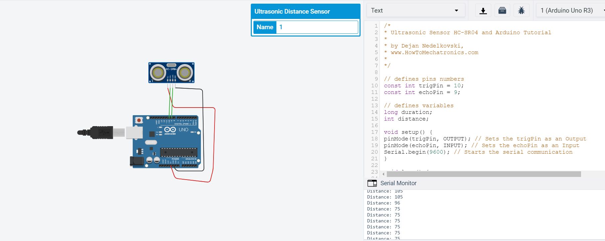
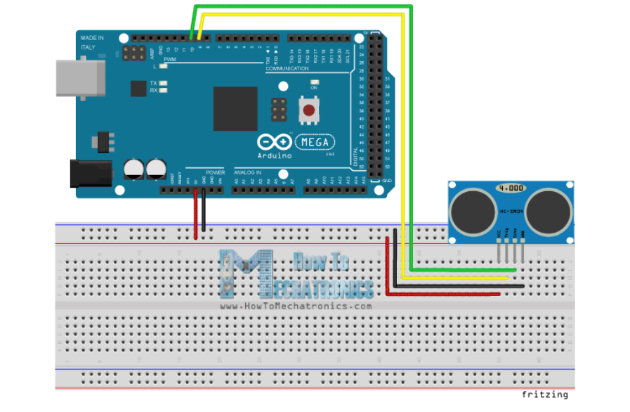

Module Project

Class Assignment


This assignment that my lecturer gave is using the Ultrasonic Sensor HC-SR04. Basically we use sound wave to measure distance. It emits an ultrasound at 40 000 Hz which travels through the air and if there is an object or obstacle on its path It will bounce back to the module. Considering the travel time and the speed of the sound you can calculate the distance.
The HC-SR04 Ultrasonic Module has 4 pins, Ground, VCC, Trig and Echo. The Ground and the VCC pins of the module needs to be connected to the Ground and the 5 volts pins on the Arduino Board respectively and the trig and echo pins to any Digital I/O pin on the Arduino Board.
One of the website i found regarding using the Ultrasonic Sensor is here.